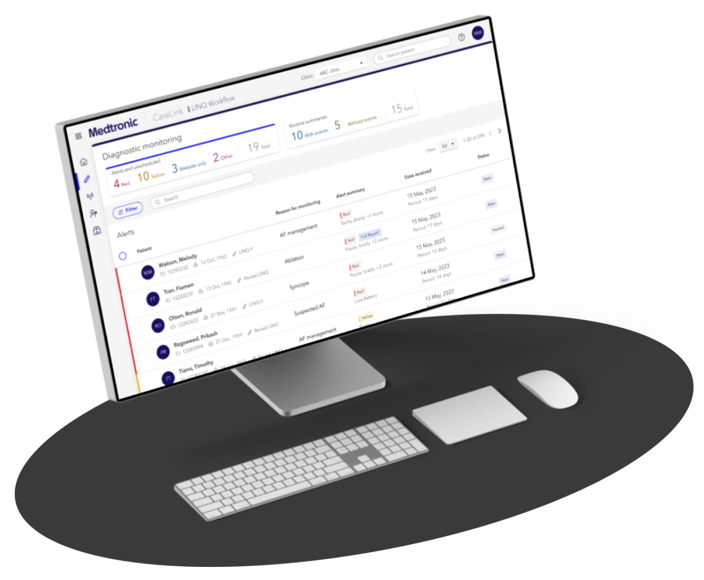
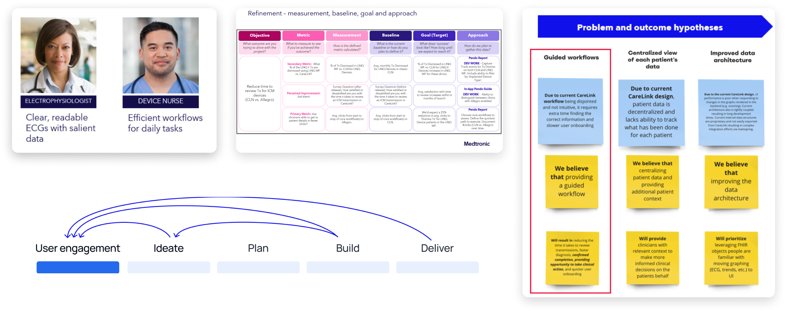
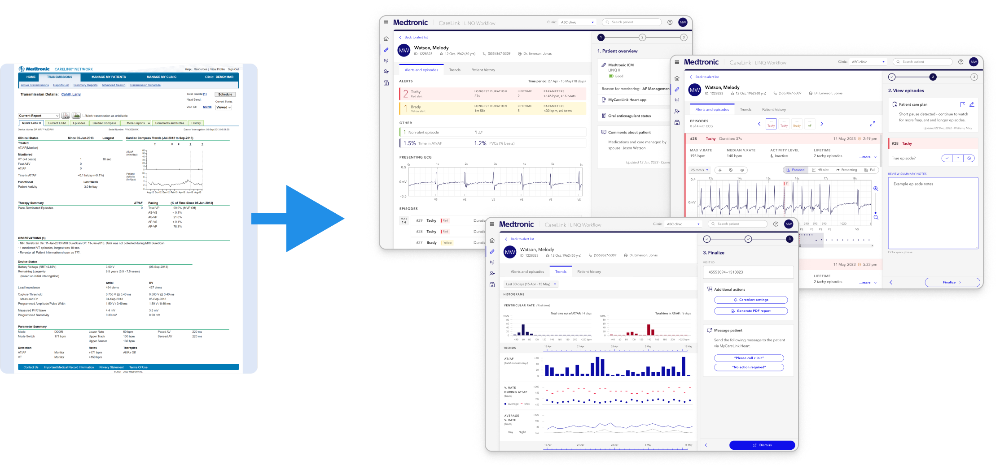

Problem statement and business case
The market for implantable cardiac monitoring devices has rapidly grown, leading to an exponential
increase in data and some key pain points. Device nurses face challenges managing this overwhelming
data burden. Current workflows lack efficiency and essential tools for ECG adjudication. Clarifying
the importance of data remains a concern, as many device alerts are non-actionable, causing
unnecessary work.
The business goal was to focus on the aspect of a device nurse's day to day interaction with our
product that would have the most impact. By learning more about their end to end workflows, we can
start building a product that best support those workflows, improve tooling, and create a framework
that would support future growth and opportunities.

User-centric process
I helped ensure our development process and strategy was driven by UX. The core leadership team
comprised of a PM, PO, PDM, technical architect, and UX lead (myself). We collaborated to define our
business objectives, scope, project plan, development process, and KPIs. The development roadmap aligned
to the UX priorities and our key metrics plan ensured that we will be able to measure success.
Our approach was to take the journey with our users every step of the way. Throughout the development
lifecycle and after release, we continued to partner closely with our users with consistent monthly
engagement to test our assumptions, identify opportunities, and test designs. This helped drive our
direction, solutioning, and gave us the ability and confidence to pivot as needed.

Innovative solution
We developed a comprehensive solution that emphasizes alert prioritization and guides users through
the process of thoroughly reviewing all relevant device data.
Key innovations include: a brand new ECG visualizer with higher fidelity and key tooling to aid in
quick and accurate episode adjudication; workflows that provide seamless access to patient context
and history, allowing users to stay focused on the task at hand without needing to navigate around
hunting for information; a guided workflow that facilitates triaging, to review, to documentation
and routing.

From static reports to data driven interactive workflows